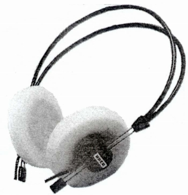

W674

■価格 12,700円■型式 ダイナミック型オープンタイプ■振動板 ■インピーダンス 500Ω■再生周波数帯域 20-20,000Hz■許容入力 ■感度 ■コード 2.4m DINコネクター付■重量 130g（コード含む）■発売 1977年頃■販売終了 1979年頃■備考 4200IC用なお1976年のテープサウンド誌に同型のW675を紹介している記事があるので実際の発売は1976年以前と思われる
ウーヘルのインデックスへ